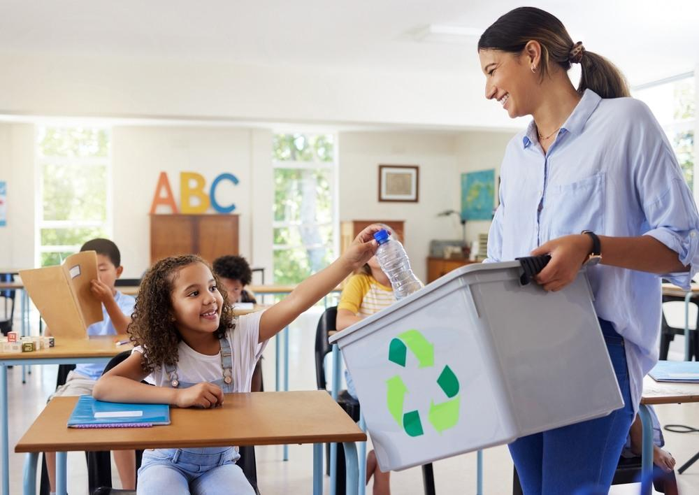

Texto
🌍 Nuestro proyecto sostenible.
Construyendo un mundo sostenible: soluciones locales para problemas globales
Este proyecto de Aprendizaje Basado en Proyectos (ABP) está dirigido al alumnado de 3º ESO y tiene como finalidad desarrollar la conciencia ambiental, la competencia digital y el trabajo cooperativo mediante la búsqueda de soluciones sostenibles a problemas reales del entorno.
El alumnado investigará diferentes problemáticas medioambientales relacionadas con el consumo responsable, los residuos, la contaminación y el desarrollo sostenible, elaborando propuestas creativas y digitales para mejorar su comunidad.
🎯 Objetivos del proyecto
✅ Fomentar el pensamiento crítico.
✅ Promover hábitos sostenibles.
✅ Utilizar herramientas digitales de forma responsable.
✅ Desarrollar el trabajo cooperativo.
✅ Potenciar la creatividad y la comunicación.
📚 Materias implicadas
🌍 Geografía e Historia
🧪 Biología y Geología
💻 Tecnología
✍️ Lengua Castellana
🌱 Metodología
El proyecto se desarrolla mediante:
Aprendizaje Basado en Proyectos (ABP)
Trabajo cooperativo
Competencia digital
Evaluación formativa
Principios DUA e inclusión educativa
